100만번씩
룰렛·캡슐·풍선·폭탄·로또는 28명 반과 40명 반에서 각각 번호마다 뽑힌 횟수를 셌어요. 풍선과 폭탄은 연출이 끝났을 때 화면에 보인 번호를 셌어요.
승부수는 기본 6칸이 정한 비율대로 나오는지 봤어요.
판정: 모두 공평
무료Windows용 프로그램
프로그램은 Windows PC에서 받아 주세요.
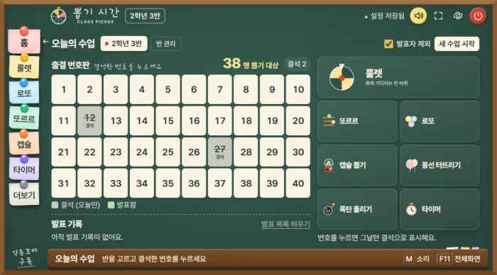
받은 파일을 두 번 누르면 열려요. USB에 넣어 다녀도 돼요.
받는 법학교망이 끊겨도 뽑기는 모두 돼요.
인터넷을 쓰는 때이름을 넣는 칸이 없어요. 번호만 써요.
학생 정보를 다루는 법공평성 검증
2026년 11월 1일 검증
룰렛·캡슐·풍선·폭탄·로또·승부수는 각 100만 번, 또르르는 10만 9,600판을 돌려 확인했어요.
앱에 들어 있는 추첨 코드를 그대로 돌렸어요. 검증은 외부 기관이 아니라 만든 사람이 직접 했어요.
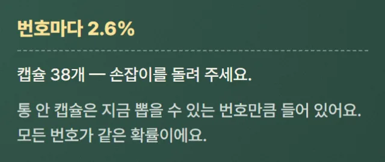
100만번씩
룰렛·캡슐·풍선·폭탄·로또는 28명 반과 40명 반에서 각각 번호마다 뽑힌 횟수를 셌어요. 풍선과 폭탄은 연출이 끝났을 때 화면에 보인 번호를 셌어요.
승부수는 기본 6칸이 정한 비율대로 나오는지 봤어요.
판정: 모두 공평
10만 9,600판
또르르는 28명으로 실제 물리 경주를 돌려 꼴찌 당첨을 셌어요.
판마다 맵 네 개 가운데 하나를 무작위로 골랐고, 막대기를 켠 채 아무도 건드리지 않았어요. 꼴찌 당첨은 앱 기본값이에요. 선생님이 막대기, 기울이기, 흔들기를 쓰면 결과가 달라질 수 있어요.
판정: 공평
28명이면 번호마다 꼴찌로 당첨될 확률은 3.57%예요. 10만 9,600판에서 가장 많이 당첨된 25번은 3.67%, 가장 적게 당첨된 3번은 3.47%였어요.
출발 자리는 자리마다 유불리가 있었어요(2.33%~6.15%). 그래서 앱은 한 판이 끝날 때마다 출발 자리를 새로 섞어요. 어느 번호도 좋은 자리에 계속 머물지 않아요.
카이제곱 검사에서 p ≥ 0.01이면 공평으로 판정했어요. 또르르는 p = 0.71이었어요.
연출과 확률
룰렛·로또·캡슐·풍선·폭탄은 당첨 번호를 먼저 공평하게 정하고 나서 연출을 보여 줘요. 막판에 칸을 넘어가거나 되돌아오는 장면도 확률을 바꾸지 않아요.
또르르는 미리 정해 둔 당첨자가 없어요. 공이 실제로 도착한 순서대로 정해져요.
특정 번호가 뽑히도록 정하는 기능은 없어요.
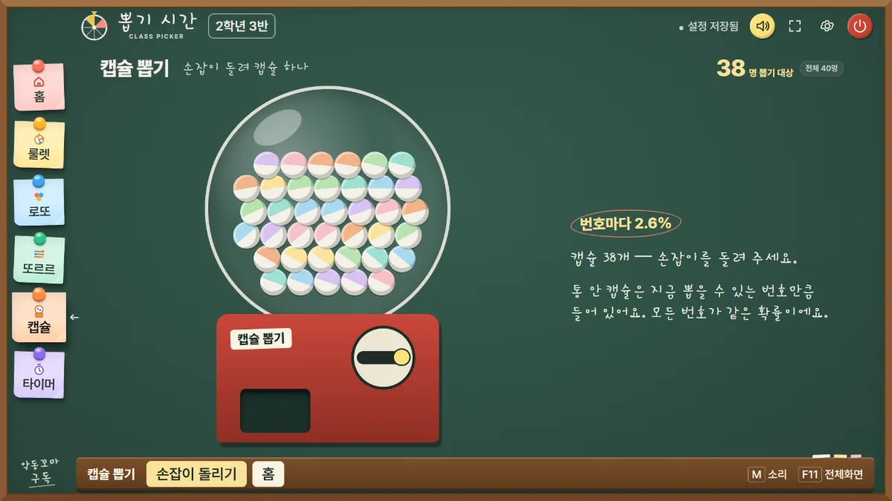
뽑기 도구
룰렛·로또·캡슐·풍선·폭탄은 번호마다 확률이 같아요.
28명이면 번호마다 3.57%40명이면 번호마다 2.5%
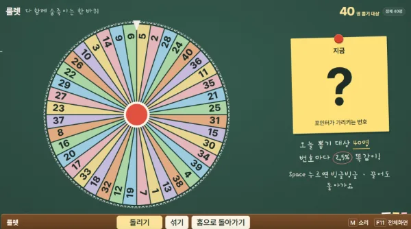
번호마다 칸 크기가 같은 원판이에요. Space를 누르거나 원판을 끌어서 돌려요.
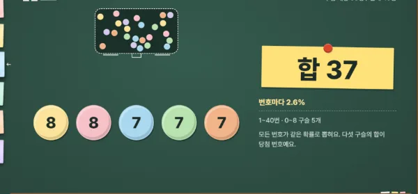
구슬 다섯 개의 합이 당첨 번호예요. 번호를 먼저 정해 두고, 합이 그 번호가 되는 구슬을 보여 줘요.
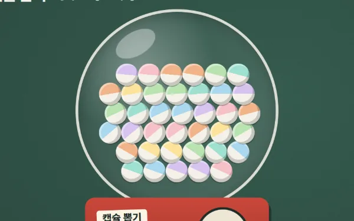
통 안에는 지금 뽑을 수 있는 번호만큼 캡슐이 들어 있어요. 손잡이를 돌리면 잠시 뒤 캡슐 하나가 열려요. 「발표자 제외」를 켜면 이미 발표한 번호의 캡슐은 통에서 빠져요.
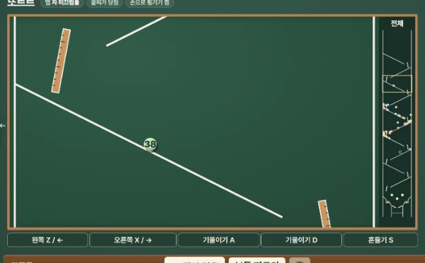
번호 공이 긴 코스를 실제로 굴러 내려오는 경주예요. 맵은 자 미끄럼틀, 못밭과 풍차, 깔때기 다섯 고개, 물레방아 길 네 가지예요. 몇 번째로 도착한 공을 뽑을지 1등부터 꼴찌까지 정할 수 있고, 미니맵으로 코스를 살펴볼 수 있어요.
자 미끄럼틀, 못밭과 풍차에는 좌우 막대기가 있고, 깔때기 다섯 고개, 물레방아 길에는 자동으로 오가는 자가 있어요. 모든 맵 양쪽에 스프링이 있어요. 막대기, 기울이기, 흔들기는 결과를 바꿀 수 있어요.
번호 풍선이 하나씩 터지고, 끝까지 남은 풍선이 당첨이에요. 압정 종이비행기 연출은 처음에는 꺼져 있고, 설정이나 화면 단추로 켤 수 있어요.
폭탄이 책상 사이를 뛰어다니다가 터지면, 그 책상의 번호가 당첨이에요.
당첨된 학생이 한 번 더 돌리는 작은 룰렛이에요.
| 기본 칸 | 확률 |
|---|---|
| 2문장 발표 | 53% |
| 다른 사람 지명 | 15% |
| 한 명 더! | 15% |
| 재추첨 | 5% |
| 패스권 | 7% |
| 수업 종료 (고정) | 5% |
수업 흐름
홈 위쪽 이름표로 반을 골라요. 결석한 번호를 한 번 누르면 그날 뽑기에서 빠져요.
결과 창에서 「발표하기」를 누르면 기록돼요. 「승부수」로 한 번 더 돌릴 수도 있어요.
「발표자 제외」를 켜 두면 이미 발표한 학생은 다시 뽑히지 않아요. 오늘 누가 발표했는지도 같은 화면에서 볼 수 있어요.
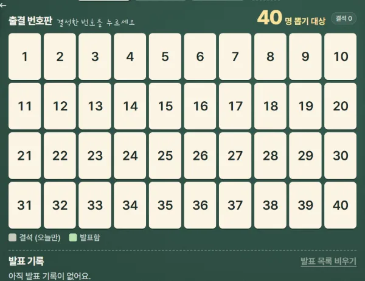
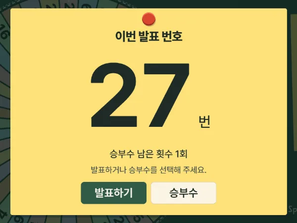
발표 기록은 프로그램을 끄면 지워져요. 학생 기록이 남지 않도록 만들었어요.
캡슐은 손잡이를 돌리고 약 4초 뒤에 열리고, 풍선은 한 번에 약 9~12초, 폭탄은 약 8~9초 걸려요. 또르르는 맵과 공의 움직임에 따라 도착 시간이 달라요. 「2배 빠르기」로 빨리 볼 수 있어요.
1.4.3에서 추가
1~15번, 20~35번처럼 번호가 떨어진 반은 설정의 「우리 반」에서 없는 번호를 한 번만 눌러 두세요. 빈 번호는 어느 뽑기에서도 나오지 않아서, 수업마다 결석으로 누르지 않아도 돼요.
반은 여러 개 저장해 두고 홈에서 이름표로 바로 바꿀 수 있어요.
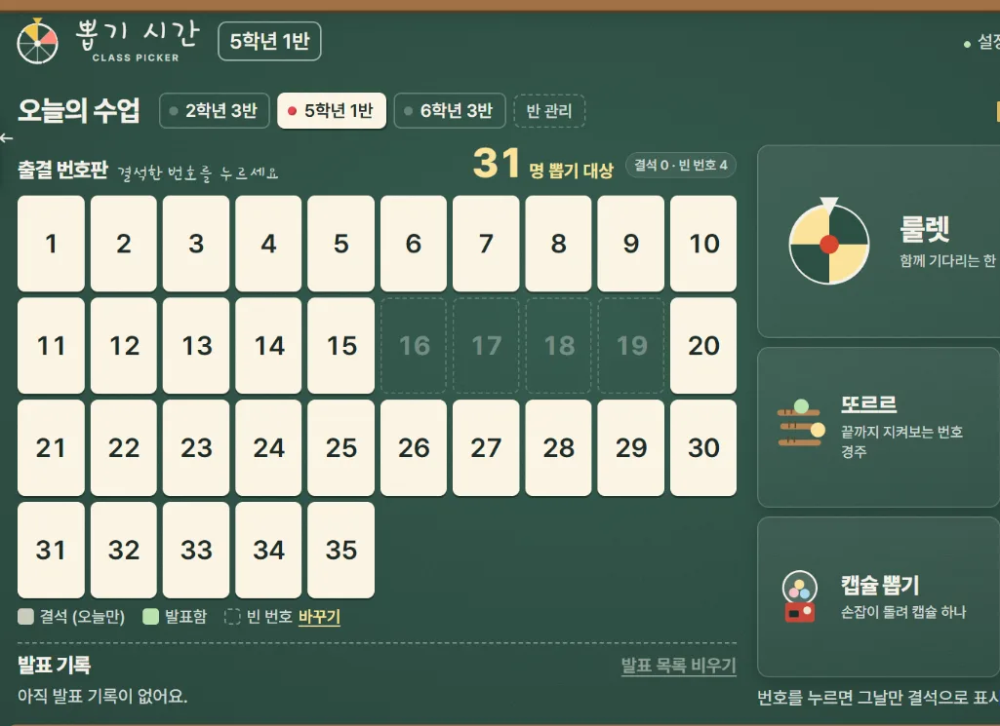
칠판 화면
초록 칠판에 분필 글씨 같은 큰 글자로 보여 줘요. 프로젝터나 TV에 띄우고 F11을 누르면 전체화면이 돼요. 마우스 없이 키보드로도 쓸 수 있어요.
| 키 | 하는 일 |
|---|---|
| Space | 시작 |
| M | 소리 켜기·끄기 |
| ESC | 홈으로 |
| F11 | 전체화면 |
| ← → 또는 Z X | 또르르 막대기 (설정에서 끌 수 있어요) |
| A D · S | 또르르 기울이기 · 흔들기 (막대기를 꺼도 남아요) |
분과 초를 넣고 시작하면 끝날 때 종료음이 한 번 울려요. 다른 화면으로 가거나 창을 내리면 저절로 멈춰요.
화면 10가지
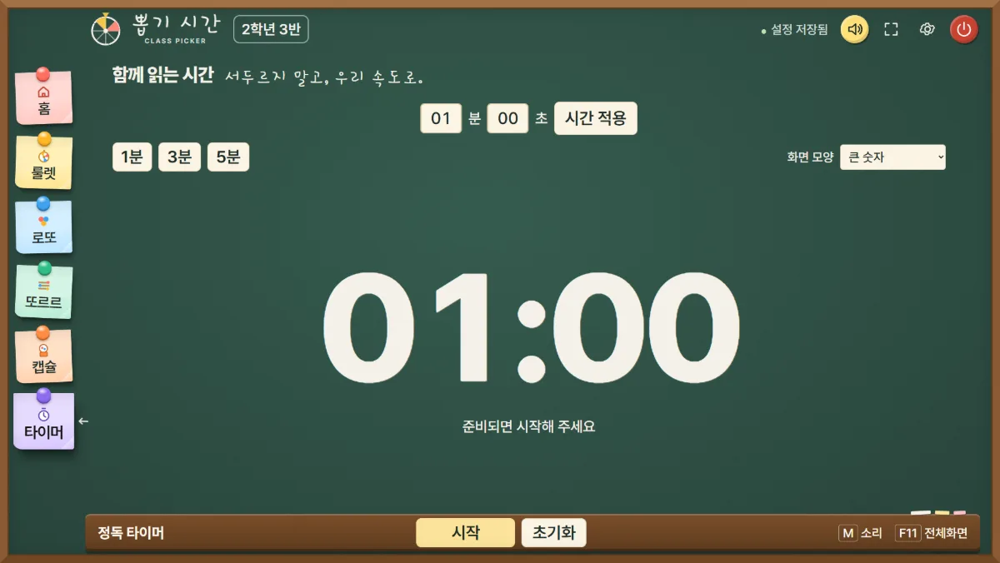
안심하고 쓰기
학생 번호, 결석, 발표 기록은 어디로도 보내지 않아요. 계정도 필요 없어요.
업데이트와 공지 확인, 타이머의 유튜브 영상에 써요. 선생님이 동의한 경우에만 학교 이름과 컴퓨터 모델명을 보내요.
무료로 받기
받은 파일을 두 번 눌러 열어요. 처음 열 때 Windows 경고 창이 나오면 오른쪽아래 메모대로 해 주세요.
무료로 받기ppobgi-sigan.exe · Windows 64비트 · 약 341MB · 현재 버전 1.5.3
휴대폰에서는 쓸 수 없어요. Windows PC에서 받아 주세요.
ppobgi-sigan.exe, 크기는 340,562,423바이트(약 341MB)예요.a79023e2c7f3e2a7f3990e1edca65e96fb0facb3f83e66b682773ce50b5dfe7a만든 사람: 이건윤gunyoon0322@naver.com
ppobgi-sigan.exe를 원하는 폴더나 USB에 둬요.data 폴더에 저장돼요. 폴더째 옮기면 설정도 함께 가요.네, 무료예요.
아래 표는 만든 사람의 PC에서 CPU를 일부러 느리게 만들어 가며 잰 결과로 정한 추정치예요. 실제 교실 노트북에서 확인한 값은 아니에요.
| 항목 | 최소 | 권장 |
|---|---|---|
| 운영체제 | Windows 10 · 11 (64비트) | Windows 11 (64비트) |
| CPU | 보급형 노트북 CPU (셀러론 N4000 · 펜티엄 실버급) | 코어 i3 8세대 · 라이젠 3 이상 |
| 메모리 | 4GB | 8GB 이상 |
| 여유 공간 | 1.5GB (업데이트 포함) | 2GB 이상 |
| 그래픽 | 따로 필요 없어요 (내장 그래픽) | 4K TV에 연결하면 4K 출력이 되는 그래픽 |
| 화면 | 1366×768 | 1920×1080 · 4K TV |
가장 무거운 것은 공 40개가 달리는 또르르예요. 새 엔진은 만든 사람의 PC(라이젠 7 9700X, RAM 약 32GB)에서 네 맵, 공 40개, 1등과 꼴찌로 8가지 조건을 숨김 창으로 검사했어요. 평균 약 60fps, 프레임 간격 p95는 16.7~16.8ms였어요. 숨김 실행 때 전체 프로세스 메모리는 약 0.7~1.8GiB였어요. 실제 화면, GPU, 저사양 PC에서는 아직 따로 확인하지 못했어요.
켤 때마다 임시 폴더에 약 341MB를 풀어요. 업데이트할 때는 새 파일과 이전 파일을 함께 보관해서 여유 공간이 더 필요해요. 이 프로그램은 Windows 7 · 8, 맥, 태블릿에서는 실행되지 않아요.
코드 서명이 없어서 「Windows의 PC 보호」 창이 나올 수 있어요. 「추가 정보」를 누른 뒤 「실행」을 눌러 주세요. 학교 PC 설정 때문에 「실행」이 보이지 않으면 학교 전산 담당 선생님께 여쭤 주세요. 켜진 뒤 받는 업데이트 파일은 서명이 맞을 때만 적용해요.
학생 이름을 넣는 칸이 없어요. 번호, 결석, 발표 기록은 어디로도 보내지 않고, 프로그램을 끄면 사라져요. 인터넷은 업데이트와 공지 확인, 선생님이 고른 유튜브 타이머 화면, 선생님이 동의한 경우의 사용 현황(학교 이름, 컴퓨터 모델명)에만 써요.
처음 켤 때 묻는 창에서 선생님이 동의한 경우에만 학교 이름, 컴퓨터 모델명, Windows와 앱 버전, 보낸 날짜, 이 PC를 구분하는 임의 번호를 보내요. 학생 이름과 번호, 뽑기 결과는 보내지 않아요. 마지막으로 보낸 날부터 1년 뒤에 지우고, 설정의 「정보」에서 동의를 취소하면 바로 지워요. 동의하지 않아도 모든 기능을 그대로 쓸 수 있어요. 자세한 내용은 개인정보 처리방침에 있어요.
룰렛·로또·캡슐·풍선·폭탄은 연출 전에 당첨을 먼저 공평하게 정해요. 연출은 확률을 바꾸지 않아요. 각 100만 번씩 돌려 본 검증 보고서도 공개해 두었어요.
네, 바뀔 수 있어요. 또르르는 공이 실제로 도착한 순서로 정해지기 때문이에요. 10만 9,600판 검증은 아무도 건드리지 않은 경기에서 꼴찌 당첨만 잰 결과예요. 막대기는 설정의 「게임」 탭에서 끌 수 있지만, 기울이기(A · D)와 흔들기(S)는 그대로 남아요. 완전히 우연에 맡기고 싶은 날에는 룰렛이나 캡슐을 권해요.
Windows 11에서 확인했어요. Windows 10(64비트)은 프로그램 바탕이 지원하지만 아직 직접 확인하지 못했어요. Windows 7 · 8과 휴대폰은 지원하지 않아요. 맥과 태블릿에서는 프로그램 대신 「웹에서 바로 열기」로 웹 앱을 쓸 수 있어요. 아이패드에서는 iPadOS 16 이상, 최신 사파리·크롬·엣지에서 열어 주세요. 홈 화면에 추가해 쓰면 사파리 탭과 달리 실수로 뒤로 밀거나 새로 고쳐 오늘 수업 기록이 지워지는 일이 없어요.
빨리 켜지도록 압축하지 않은 파일이라 커요. 한 번 받아 두면 USB로 옮겨 쓸 수 있어요.
섞이지 않아요. 반 설정은 파일 옆 data 폴더에만 저장되고 어디로도 보내지 않아요. 다만 바탕화면이 OneDrive와 동기화되고 같은 계정으로 여러 PC를 쓰면, OneDrive가 data 폴더를 PC끼리 맞춰 줘요. 이럴 때는 파일을 OneDrive 밖 폴더(예: C:\뽑기시간)나 USB에 두세요.
반 설정은 프로그램 파일 바로 옆 data 폴더에 있어요. 새 파일을 다른 폴더(예: 다운로드)에서 켜면 옆에 data가 없어서 처음처럼 반 만들기부터 나와요. 예전에 쓰던 폴더의 data 폴더를 새 파일 옆으로 옮기거나, 새 파일을 예전 폴더에 넣고 옛 파일을 지워 주세요. 앱 안에서 업데이트하면 폴더가 그대로라 이런 일이 없어요.
학생 기록을 남기지 않는 쪽을 일부러 골랐어요. 프로그램을 끄거나 업데이트 뒤 다시 시작하면 그날 기록은 지워져요.
아니요. 켜진 뒤에는 새 버전이 있는지 확인만 하고, 있으면 홈 위쪽에 알림 줄이 나와요. 설정의 「정보」 탭에서 선생님이 「업데이트 받기」와 「다시 시작」을 누르셔야 바뀌어요. 다시 시작하면 그날 결석과 발표 기록은 지워지고 설정은 그대로 남아요. 업데이트는 수업이 끝난 뒤에 해 주세요.
재미로 넣은 칸이에요. 확률은 5%로 고정이고, 나오면 홈 화면으로 돌아가요. 다른 칸과 확률은 선생님이 바꿀 수 있어요.